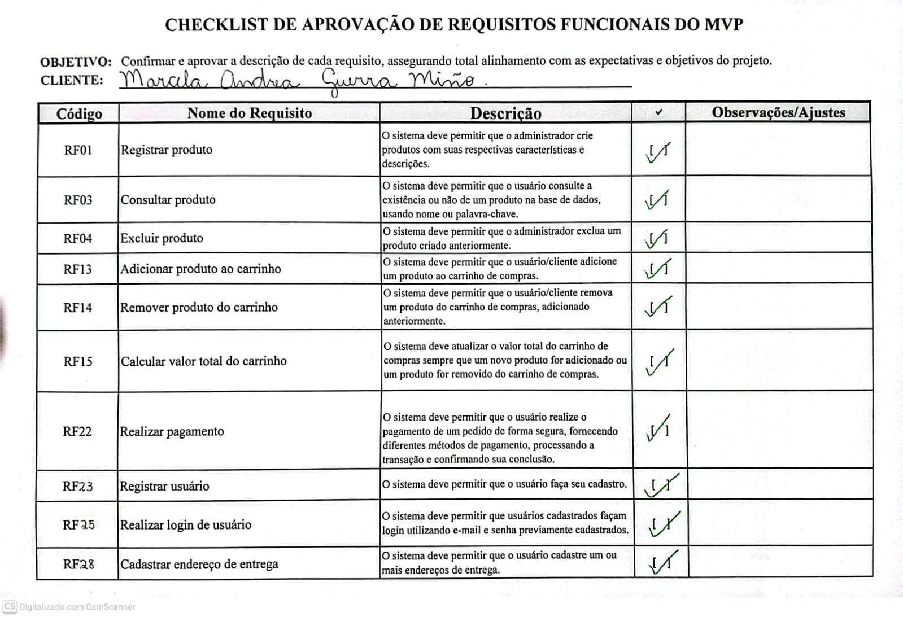
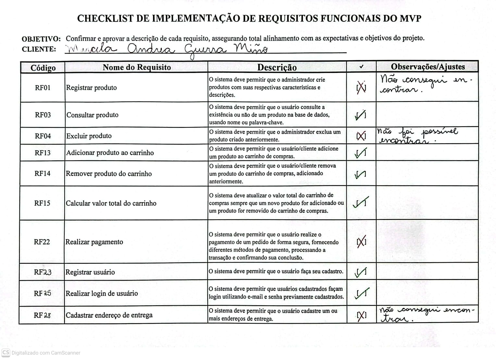

1. Elicitação e Descoberta: Entrevista com o casal
Vídeo: Entrevista com o Cliente
2. Análise e Consenso: Reunião de Alinhamento
3. Representação: Prototipagem
4. Verificação e Validação: Feedback do Protótipo
Vídeo: Feedback do cliente sobre o protótipo
5. Verificação e Validação: Checklist de aprovação dos RF do MVP
Checklist de Aprovação

Figura 1: Checklist de aprovação dos requisitos funcionais do MVP
6. Verificação e Validação: Feedback do cliente
Vídeo: Feedback do cliente sobre o MVP
7. Verificação e Validação: Checklist de implementação dos RF do MVP
Checklist de implementação dos RF do MVP

Figura 2: Checklist de implementação dos requisitos funcionais do MVP
8. Verificação e Validação: Feedback do cliente
Vídeo: Feedback do cliente sobre implementação do MVP
9. Análise e Consenso: Reunião de alinhamento
Vídeo: Reunião de Alinhamento